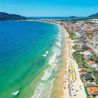
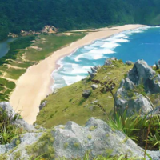
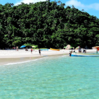

Região Norte:
Por ser a mais frequentada da cidade na alta temporada, a Região Norte é a preferida dos turistas — e com razão, já que o local oferece uma excelente infraestrutura e diversas atrações, como trilhas, passeio de escuna e por dunas e, claro, muitas praias com mares calmos e cristalinos como a famosa e bela Praia de Jurerê. Por outro lado, essa região também apresenta orlas mais agitadas. Dentre elas, três se destacam: Santinho, Praia Brava e Ingleses. São lugares que oferecem excelentes ondas, portanto, atraem inúmeros surfistas e praticantes de esportes. Saiba mais clicando aqui!Região Leste:
A Região Leste é uma das mais belas da cidade. Isso porque reúne em um só lugar atrativos naturais, como morros, praias, dunas e um dos locais mais famosos de Floripa: a Lagoa da Conceição, que chama atenção não só pela sua beleza, mas sobretudo pela diversidade cultural. É um local que congrega perfeitamente a vivência entre turistas e moradores. Nessa região também se encontram duas das praias mais conhecidas da capital catarinense: a Praia Mole e a Praia da Joaquina (que já recebeu uma etapa do circuito mundial de surf). Saiba mais clicando aqui!


Região Sul:
A Região Sul, além de oferecer muitas opções de lazer, possibilita que você conheça uma Florianópolis colonial. O lugar reúne elementos que reportam à época do Brasil colônia, sobretudo em sua arquitetura. O território também chama a atenção dos visitantes pelas inúmeras trilhas cercadas pela exuberante Mata Atlântica e por suas praias de areias brancas, águas cristalinas e ondas medianas, ideais para a prática do surf. Saiba mais clicando aqui!